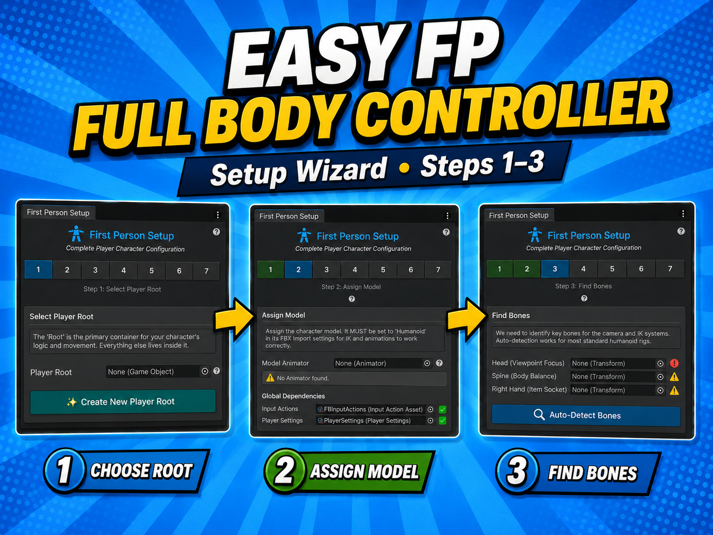

The public runtime API for integrating with the controller. All runtime types are in namespace Player. This page covers the integration surface: demo scripts, editor inspectors, and internal tuning fields are omitted (see source under Assets/FBSystem/).
vedaloiv / shipped sourcev1.1.0namespace Player

Integration surfaceRuntime API
PlayerController: the hub
Central MonoBehaviour. Auto-finds every sub-component in Awake if you leave them unassigned, so external code only needs one reference.
Subsystem accessors
Property
Type
Subsystem
Settings
PlayerSettings
global config asset
Input
PlayerInputHandler
input state
Locomotion
PlayerLocomotion
movement & physics
CameraController
PlayerCameraController
FPS camera
AnimatorController
PlayerAnimatorController
animation + item layers
HeadIK
PlayerHeadIK
head look-at IK
HandIK
PlayerHandIK
hand IK
SpineStabilizer
PlayerSpineStabilizer
spine yaw
HandItemSocket
HandItemSocket
item equip
State (read-only)
Member
Type
Notes
IsGrounded
read-only state
IsSprinting
read-only state
MoveInput
read-only state
LookInput
read-only state
FlashlightTriggered
read-only state
CurrentSpeed
read-only state
MaxSpeed
read-only state
Control methods (menus / cutscenes / pausing):
Member
Signature
Notes
SetInputEnabled
SetInputEnabled(bool)
SetMovementEnabled
SetMovementEnabled(bool)
SetCameraEnabled
SetCameraEnabled(bool)
SetHeadIKEnabled
SetHeadIKEnabled(bool)
SetHandIKEnabled
SetHandIKEnabled(bool)
SetSpineStabilizationEnabled
SetSpineStabilizationEnabled(bool)
SetCursorLocked
SetCursorLocked(bool)
EnableAllControls
EnableAllControls()
resume gameplay
DisableAllControls
DisableAllControls()
enter cutscene / menu
var player = GetComponent<PlayerController>();
player.DisableAllControls(); // enter cutscene / menu
// ...
player.EnableAllControls(); // resume gameplay
Configuration: PlayerSettings
ScriptableObject (Create ▸ Player ▸ Settings). Referenced by most components, so it's the single place to tune feel. beginnerMode toggles a simplified inspector view.
Member
Type
Notes
beginnerMode
bool
When enabled, the Inspector will show a simplified view for beginners. (default: true)
walkSpeed
float
Walking speed in units per second. (default: 3.0f)
sprintSpeed
float
Sprinting speed in units per second. (default: 6.0f)
crouchSpeed
float
Movement speed while crouching in units per second. (default: 1.5f)
crouchHeight
float
CharacterController height while crouching. (default: 1.0f)
standHeight
float
CharacterController height while standing. (default: 2.0f)
crouchTransitionSpeed
float
Speed of crouch/stand transition. (default: 8f)
jumpHeight
float
Jump height in units. (default: 1.2f)
gravity
float
Gravity force (should be negative). (default: -15f)
groundCheckDistance
float
Distance to check for ground below player. (default: 0.2f)
groundedVelocityReset
float
Velocity applied when grounded to keep player grounded. (default: -2f)
inputDeadzone
float
Minimum input magnitude to register movement. (default: 0.01f)
animationSmoothTime
float
Time to smooth animation parameter changes. (default: 0.1f)
sprintAnimMultiplier
float
Animation speed multiplier when sprinting. (default: 1.5f)
defaultHeadHeight
float
Default head height when no head bone is available. (default: 1.6f)
lookTargetDistance
float
Distance to place look target in front of player. (default: 2f)
cameraFallbackHeadHeight
float
Fallback head height when head bone is not assigned. (default: 1.7f)
verticalLookLimit
float
Maximum vertical look angle for the camera. (default: 80f)
handVerticalLimitUpper/Lower
float
Maximum vertical look angle for the hand IK tracking when looking UP; Maximum vertical look angle for the hand IK tracking when looking DOWN. (default: 45f / 45f)
enableSpineStabilization
bool
Enable spine stabilization logic. (default: true)
spineStiffness
float
Weight of stabilization. (default: 1.0f)
spineDamping
float
Smoothing speed. (default: 10f)
lowerSpineWeight
float
Rotation weight for lower spine. (default: 0.3f)
middleSpineWeight
float
Rotation weight for middle spine. (default: 0.3f)
upperSpineWeight
float
Rotation weight for upper spine. (default: 0.4f)
Input: PlayerInputHandler
Reads the Unity Input System asset (inputActions, actionMapName = "Player").
Per-frame state (read-only)
Member
Type
Notes
MoveInput
Vector2
Current movement input vector (X = Strafe, Y = Forward), normalized between -1 and 1.
LookInput
Vector2
Current look input vector (X = Horizontal, Y = Vertical) from mouse/joystick.
IsSprinting
bool
Whether the sprint button is currently held.
JumpTriggered
bool
Whether a jump was triggered this frame; true for the single frame jump is pressed.
IsCrouching
bool
Whether the player is in the crouch state (toggled on each press).
FlashlightTriggered
bool
Whether the flashlight was toggled this frame; true for the single frame it is pressed.
Methods
Member
Signature
Notes
LockCursor
LockCursor()
Locks the cursor for first-person gameplay (sets Cursor.lockState to Locked, hides cursor).
UnlockCursor
UnlockCursor()
Unlocks the cursor for UI interaction (sets Cursor.lockState to None, shows cursor).
Player action map (FBInputActions)
Move
Look
Attack
Interact
Crouch
Jump
Previous
Next
Sprint
Flashlight
Locomotion: PlayerLocomotion
[RequireComponent(typeof(CharacterController))].
Configurable fields
Member
Type
Notes
walkSpeed
float
Horizontal movement speed while walking. (default: 3.0f)
sprintSpeed
float
Horizontal movement speed while sprinting. (default: 6.0f)
jumpHeight
float
Vertical height of a single jump. (default: 1.2f)
gravity
float
Gravity force applied to the player (negative value). (default: -15f)
crouchSpeed
float
Horizontal movement speed while crouching. (default: 1.5f)
crouchHeight
float
CharacterController height when fully crouched. (default: 1.0f)
standHeight
float
CharacterController height when standing. (default: 2.0f)
crouchTransitionSpeed
float
Speed of height interpolation between states. (default: 8f)
groundCheckDistance
float
Distance below feet to check for ground. (default: 0.2f)
groundLayers
LayerMask
Layers to consider as ground. (default: ~0)
inputDeadzone
float
Minimum input magnitude to trigger movement. (default: 0.01f)
State
Member
Type
Notes
IsGrounded
bool
True if the player is currently touching the ground (CharacterController + raycast fallback).
IsSprinting
bool
True if the player is currently sprinting; only possible when grounded and not crouching.
CurrentSpeed
float
The current horizontal speed of the player in units per second.
MaxSpeed
float
The theoretical maximum speed in the current state (crouch/walk/sprint).
Fires the locomotion events listed below.
Camera: PlayerCameraController
Cinemachine-based.
Configurable
Member
Type
Notes
eyeOffset
Vector3
Offset from head bone position while standing. (default: (0, 0.05, 0.1))
crouchEyeOffset
Vector3
Offset from head bone position while crouching. (default: (0, 0.05, 0.05))
lookSensitivity
float
Mouse sensitivity multiplier. (default: 0.1f)
verticalLookLimit
float
Maximum vertical look angle (degrees). (default: 80f)
Public API
Member
Type / Signature
Notes
CameraTarget
Transform
The actual transform the Cinemachine camera follows and looks at.
Pitch
float
Current vertical look angle in degrees (used by Animation Rigging).
Yaw
float
Current horizontal look angle in degrees.
GetLookAngles
GetLookAngles() → Vector2
Gets the current look direction as a Vector2 (X = Yaw, Y = Pitch).
SetLookDirection
SetLookDirection(float yaw, float pitch)
Sets the look direction programmatically (useful for respawning, cutscenes, etc.).
SyncCameraTargetToHead
SyncCameraTargetToHead()
Syncs the camera target position to the animated head bone; called in LateUpdate; external IK systems may call it manually.
Manages a list of items and equips them through the socket (it no longer emits its own equip events).
Properties
Member
Type
Notes
CurrentItem
GameObject
The currently equipped item, or null if none.
HasEquippedItem
bool
Whether an item is currently equipped.
CurrentIndex
int
The index of the currently equipped item, or -1 if none.
ItemCount
int
Number of items in the container.
HandSocket
HandItemSocket
The hand socket this container equips items through; subscribe to its canonical item events (e.g. ItemEquipped).
Methods
Member
Signature
Notes
EquipItem
EquipItem(int)
Equips an item by index in the items list.
EquipItemById
EquipItemById(string)
Equips an item by its unique ID defined in ItemHoldData.
EquipItem
EquipItem(GameObject)
Equips a specific item GameObject (must be in the items list).
UnequipCurrent
UnequipCurrent()
Unequips the currently equipped item.
EquipNext
EquipNext()
Cycles to the next item in the container (wraps around to index 0).
EquipPrevious
EquipPrevious()
Cycles to the previous item in the container (wraps around to the last item).
GetItem
GetItem(int)
Gets an item by index without equipping it.
GetItemById
GetItemById(string)
Gets an item GameObject by its unique ID defined in ItemHoldData.
AddItem
AddItem(GameObject)
Adds an item to the container's list (deactivated until equipped); fires OnContainerChanged.
RemoveItem
RemoveItem(GameObject) → bool
Removes an item from the container; unequips it first if currently equipped; fires OnContainerChanged; returns true if removed.
Event
Member
Type
Notes
OnContainerChanged
UnityEvent
fires when the item list itself changes: add/remove
ItemHoldData: per-item config & reactions
Attach to item GameObjects.
Member
Type
Notes
itemId
string
identity; unique identifier used to equip items via code or ID-based systems. (default: "NewItem")
OnEquip
UnityEvent
item-local event; fires alongside the system events
OnUnequip
UnityEvent
item-local event; fires alongside the system events
OnUse
UnityEvent
item-local event; fires alongside the system events
attachmentData
ItemAttachmentData
config
worldItemPrefab
GameObject
config; should carry a WorldItem component; prefab to spawn when this item is dropped
ItemId
string
property; unique identifier for this item
AttachmentData
ItemAttachmentData
property; configuration for how this item is attached and held
WorldItemPrefab
GameObject
property; prefab used when dropping this item into the world
ItemAttachmentData: hold & IK config
[Serializable].
Member
Type
Notes
animatorLayerIndex
int
The index of the override animation layer for this item; used to play specific hold/use animations. (default: 1)
holdStyle
OneHandedRight | TwoHanded
Defines if the item is held with one hand or two hands. (default: OneHandedRight)
gripPositionOffset
Vector3
Local position offset of the item mesh relative to the hand socket transform. (default: Vector3.zero)
gripRotationOffset
Vector3
Local rotation offset of the item mesh relative to the hand socket transform (Euler angles). (default: Vector3.zero)
debugMode
bool
editor-only; tune live in the editor; when enabled, offsets update in real-time (field lives on ItemHoldData). (default: false)
tuneGripMode
bool
editor-only; tune live in the editor; when enabled, transform changes are captured into the grip offsets (field lives on ItemHoldData). (default: false)
Plus standing/crouching hand and elbow IK overrides.
ItemIKPreset: share IK config
ScriptableObject (Create ▸ Player ▸ Item IK Preset).
Member
Signature
Notes
CaptureFromScene
CaptureFromScene()
context menu; copies IK config between items
ApplyToScene
ApplyToScene()
context menu; copies IK config between items
Event API: PlayerEventAPI
Three complementary mechanisms, each fired once per transition from a single canonical chokepoint:
Mechanism
For
C# event Action<TArgs>
code subscribers (struct args, no per-call allocation)
UnityEvent
Inspector / no-code wiring
Listener interfaces
full extension / structured contract; auto-discovered
Event payloads
ItemEquipArgs: Item (GameObject), SlotIndex (int, -1 if equipped outside a container), HoldData (ItemHoldData), FromContainer (bool).
Fire for every socket-backed equip/unequip (manual attach, container equip, detach).
Locomotion events: PlayerLocomotion
C# events
Member
Type
Notes
Jumped
Action<LandArgs>
Landed
Action<LandArgs>
CrouchStarted
Action
fires when crouch begins
CrouchEnded
Action
fires when crouch ends
SprintStarted
Action
fires when sprint begins
SprintEnded
Action
fires when sprint ends
GroundedChanged
Action<bool>
Inspector UnityEvent mirrors
Member
Notes
OnJumped
OnLanded
OnCrouchStarted
OnCrouchEnded
OnSprintStarted
OnSprintEnded
Listener interfaces
Implement on any MonoBehaviour under the player; it's found at startup automatically. Unhandled methods are no-ops; override only what you need.
using Player;
public class MyListener : MonoBehaviour, IItemEventListener, ILocomotionEventListener
{
public void OnItemEquipped(ItemEquipArgs args) => Debug.Log($"equipped {args.Item.name}");
public void OnItemUnequipped(ItemEquipArgs args) { }
public void OnLanded(LandArgs args) => Debug.Log($"landed at {args.ImpactVelocity}");
// OnJumped, OnCrouchStarted/Ended, OnSprintStarted/Ended, OnGroundedChanged default to no-op
}
Hides body parts in first person (default: Head) while keeping shadow casting. Generated by the FPCutter Wizard.
Methods
Member
Signature
Notes
SetFirstPerson
SetFirstPerson()
SetThirdPerson
SetThirdPerson()
HidePart
HidePart(BodyPart)
ShowPart
ShowPart(BodyPart)
Config
Member
Type
Notes
HideInFirstPerson
List<BodyPart>
invisibleMaterial
Material
uses the FPCutter_Invisible shader
The BodyPart enum is defined in FPCutterData.
Animator: PlayerAnimatorController
Drives animator parameters and item animation layers.
Member
Type / Signature
Notes
SetItemLayer
SetItemLayer(int)
SetFlashlightActive
SetFlashlightActive(bool)
ToggleFlashlight
ToggleFlashlight()
TriggerAnimation
TriggerAnimation(string)
GetAnimator
GetAnimator() → Animator
IsFlashlightActive
property
Procedural IK (advanced)
Tuned by the Setup Wizard; adjust only for advanced customization.
PlayerHeadIK
Member
Type / Signature
Notes
Weight
get/set
SetWeight
SetWeight(float)
SetWeights
SetWeights(body, head, eyes, clamp)
SetEnabled
SetEnabled(bool)
PlayerHandIK
Member
Type / Signature
Notes
IKPositionWeight
get/set
SetEnabled
SetEnabled(bool)
PlayerSpineStabilizer
[RequireComponent(typeof(Animator))]; aligns spine yaw to the camera.
Demo & Editor code (not part of the runtime API)
Demo (Project/Scripts/Player/Demo/): PlayerEventLogger (implements both listener interfaces; copy it as a template), PlayerDropSystem, PlayerInventory, PlayerInteraction, WorldItem. Editor: custom inspectors plus the setup wizards; Tools ▸ First Person ▸ Setup Wizard, the Item Container setup, and the FPCutter Wizard.
Easy FP Full Body Controller is available as a paid asset in the Asset Store.